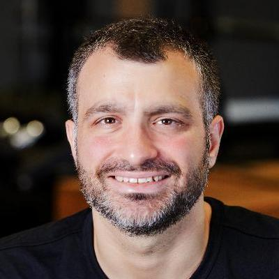
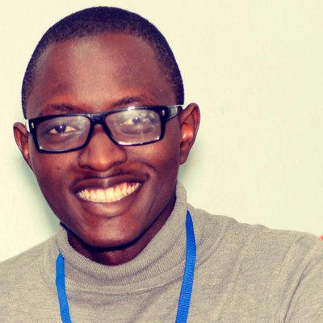
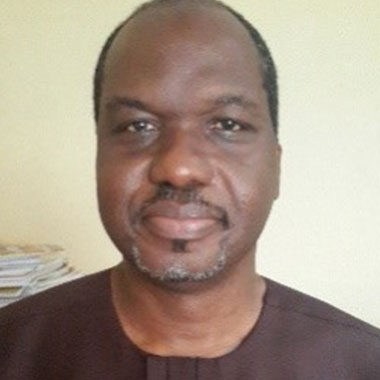

CONTACT
Click to see contact
EDUCATION
BACHELOR OF SCIENCE:
UNIVERSITY OF LAGOS
2013
UNIVERSITY OF LAGOS
2013
Physics Science
COMPUTER SKILLS
HTML
CSS
Javascript / jQuery
Bootstrap
Graphics
PHP
GML
CSS
Javascript / jQuery
Bootstrap
Graphics
PHP
GML
SOCIAL
CHIDI
NWAOGU
Serial Internet Entrepreneur
NWAOGU
ABOUT ME


Read more
I have been featured on National newspapers like Vanguard, National Mirror, The Guardian, The Nation, Business Day, Daily Trust, and New Telegraph, for my pioneering contributions in ICT in Nigeria. Since I was 19, I have co-founded, grown and sold two Internet companies.
I am presently the Co-founder and Chief Executive Officer of Publiseer, described by Konbini, as "one of the largest digital publishers in Africa". Publiseer was a finalist at the Harvard Business School New Venture Competition and MIT Solve Global Challenges.
MY CORE COMPETENCIES
Web design
Web applications
Web development
Cloud computing
User interface design
Mobile applications
Web applications
Web development
Cloud computing
User interface design
Mobile applications
Software development
User experience
Content management
Digital marketing
Public speaking
Leadership
User experience
Content management
Digital marketing
Public speaking
Leadership
MY EXPERIENCE
CO-FOUNDER
LAGbook | April 2010 - Jan 2013
LAGbook | April 2010 - Jan 2013
At the age of 19, I co-founded, built, and organically grew LAGbook (otherwise known as Ladies And Gentlemen book) with my twin brother. LAGbook a social network that grew from zero to over one-million registered members in less than three years. LAGbook was initially created for students of the University of Lagos, but later expanded to the youth demographic (18 - 30 years) in Africa.
LAGbook was acquired by the Canadian technology company, Gulf Pearl Ltd. for $10,000 in January 2013. LAGbook was featured on TechCrunch for garnering 30,000 new members in less than six months, and on African Business Review for signing an eight-week advertising deal with the multinational company, BlackBerry.
Read more
LAGbook was acquired by the Canadian technology company, Gulf Pearl Ltd. for $10,000 in January 2013. LAGbook was featured on TechCrunch for garnering 30,000 new members in less than six months, and on African Business Review for signing an eight-week advertising deal with the multinational company, BlackBerry.
CO-FOUNDER
PRAYHoUSe | Feb 2013 - Mar 2014
PRAYHoUSe | Feb 2013 - Mar 2014
After LAGbook, I co-founded PRAYHoUSe with my twin brother, an online Christian prayer directory of more than 10,000 prayers from the Scripture. I organically grew PRAYHoUSe from zero to over 200,000 users in less than six months. In March 2014, PRAYHoUSe was acquired by American non-profit organization, Ten Doves Charity, for $37,500.
CO-FOUNDER AND CHIEF EXECUTIVE OFFICER
Publiseer | Aug 2017 -
Publiseer | Aug 2017 -
I co-founded Publiseer, described by Konbini as "one of the largest digital publishers in Africa". For my contributions in Publiseer, I received the African Entrepreneurship Award. Publiseer is a digital publisher that helps African writers and musicians from low-income communities to distribute and monetize their creative works across over 400 digital stores in 100 countries, with just a single click and at no charge. Publiseer became profitable after six months from inception.
The digital publisher has received so many awards and recognitions, including becoming the first and only African publisher to join the International Publishing Distribution Association in Madrid, emerging a finalist at the Harvard Business School New Venture Competition and MIT Solve Global Challenges. Publiseer has been accepted in several accelerators and incubators, such as Microsoft's Accelerate Labs and University of Cape Town's Venture Incubation Programme. The digital publisher has been extensively covered by hundreds of media houses around the world for its exceptional achievements in the world of digital publishing.
Read more
The digital publisher has received so many awards and recognitions, including becoming the first and only African publisher to join the International Publishing Distribution Association in Madrid, emerging a finalist at the Harvard Business School New Venture Competition and MIT Solve Global Challenges. Publiseer has been accepted in several accelerators and incubators, such as Microsoft's Accelerate Labs and University of Cape Town's Venture Incubation Programme. The digital publisher has been extensively covered by hundreds of media houses around the world for its exceptional achievements in the world of digital publishing.
NEWSPAPER APPEARANCES
NATIONAL MIRROR
Nigerian Twins Pioneer Made-In-Nigeria Social Network
Nigerian Twins Pioneer Made-In-Nigeria Social Network
by ThankGod Amaefule
Jun 2011
Jun 2011
VANGUARD
UNILAG Twins Host Over 70,000 Users On LAGbook
UNILAG Twins Host Over 70,000 Users On LAGbook
by Tosin Adesile
May 2012
May 2012
VANGUARD
Let Your Dreams Run Wild - Nwaogu Twins
Let Your Dreams Run Wild - Nwaogu Twins
by Victor Gotevbe
Sep 2012
Sep 2012
Click to see all 12 media appearances
NATIONAL MIRROR
We Sold Our Laptops To Build LAGbook - LAGbook Twins
We Sold Our Laptops To Build LAGbook - LAGbook Twins
by ThankGod Amaefule
Oct 2012
Oct 2012
THE GUARDIAN
UNILAG Programmers Blaze Trail in Social Networking
UNILAG Programmers Blaze Trail in Social Networking
by David Ibemere
Feb 2013
Feb 2013
VANGUARD
Twins float platform for authors, artists
Twins float platform for authors, artists
by Amaka Abayomi
Nov 2017
Nov 2017
THE NATION
Twin brothers launch platform for authors, artistes
Twin brothers launch platform for authors, artistes
by The Nation Reporter
Oct 2017
Oct 2017
THE NATION
Publisher wins African entrepreneurship award
Publisher wins African entrepreneurship award
by Tosin Adesile
Jun 2018
Jun 2018
DAILY TRUST
Young Nigerian shines at 2018 African Entrepreneurship Award
Young Nigerian shines at 2018 African Entrepreneurship Award
by Samuel Otitolaye
Jun 2018
Jun 2018
VANGUARD
Nigerian wins BMCE awards
Nigerian wins BMCE awards
by Ebele Orakpo
Jun 2018
Jun 2018
NEW TELEGRAPH
Young entrepreneur shines at 2018 african entrepreneurship award
Young entrepreneur shines at 2018 african entrepreneurship award
by New Telegraph
Jun 2018
Jun 2018
BUSINESS DAY
Young Nigerian clinches 2018 African entrepreneurship award
Young Nigerian clinches 2018 African entrepreneurship award
by Tosin Adesile
Jun 2018
Jun 2018
PUBLIC SPEAKING
IT LEADERS WEST AFRICA SUMMIT
Nov 2012
I was the Keynote Speaker at the 2012 IT Leaders West Africa Summit that held on
November 28-29, 2012 at the Movenpick, Accra-Ghana, where I gave a 30 minutes keynote
speech on the role of social media and mobile in developing countries on Day 2,
November 29, 2012.
The summit was organized by the South African based business-to-business conferencing company, Kinetic Events. Other invited speakers to the summit included the Honourable Sherry Ayittey, Minister for Environment, Science and Technology, Ghana.
Read more
The summit was organized by the South African based business-to-business conferencing company, Kinetic Events. Other invited speakers to the summit included the Honourable Sherry Ayittey, Minister for Environment, Science and Technology, Ghana.
AIESEC GHANA YOUTH-TO-BUSINESS FORUM
Feb 2013
I was a Guest Speaker at the 2013 AIESEC Ghana Youth-To-Business Forum that held
on February 2013. I gave a 30 minutes lecture on the 12 facets of social media, and
how they could be harnessed to grew a small business enterprise.
The summit was organized by AIESEC, the world's largest non-profit youth-run organization. I was also a member of the panel that debated on the importance of Corporate Social Responsibility for student entrepreneurs.
Read more
The summit was organized by AIESEC, the world's largest non-profit youth-run organization. I was also a member of the panel that debated on the importance of Corporate Social Responsibility for student entrepreneurs.
RECOMMENDATION
EMRE SOKULLU
CEO at GROU.PS Inc
CEO at GROU.PS Inc
Nwaogu knows how to generate leads, create traffic and buzz. He's a PR and viral
growth expert.
NOSAYABA LAWANI
CEO at Online Cash Influx
CEO at Online Cash Influx
Nwaogu is success-driven and goal-oriented. He's focused, smart, approach problems
and think logically to arrive at a profound solution. Simply put, He's an inspiration.
Read more
GBOLADE EMMANUEL
Founder and CEO at Termii
Founder and CEO at Termii
Good at what he does.
REFERENCE
AKIN BRAITHWAITE
Former Chief Customer Relations Officer at MTN Communications Nigeria
Former Chief Customer Relations Officer at MTN Communications Nigeria
Contact available upon request.
KINGSLEY GBEHO
Technology Reporter
Technology Reporter
Contact available upon request.
MY LIFE IN PICTURES
.jpg)
I code at the dining too.
.jpg)
I also code in bed.
Click to see more pictures
.jpg)
I have an identical twin brother. I'm the man in black.
.jpg)
That's right, you aren't seeing double.
.jpg)
I'm the man in red. That's some of the attendees of the IT Leaders West Africa Summit.
.jpg)
That's my twin and I. I'm the man in red. We're giving a 30 minutes keynote speech at the summit.
.jpg)
I'm the man in red too. That was also taken at the summit.

That's me again.